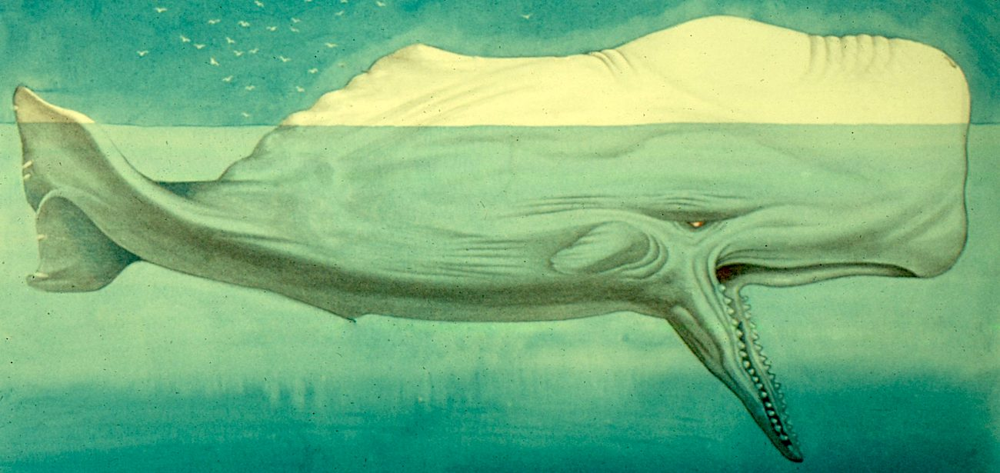

Moby Dick
Moby-Dick is a classic novel written by American author Herman Melville and first published in 1851. The novel tells the story of Captain Ahab’s obsessive quest for revenge against the great white whale, Moby Dick, which had previously maimed him during a whaling voyage. The book delves into themes of fate, obsession, the nature of evil, and man’s relationship with nature.
The story is narrated by Ishmael, a young man who decides to go to sea as a sailor and escape the landlocked world. He joins the crew of the whaling ship Pequod, captained by the enigmatic and monomaniacal Captain Ahab. On board the ship, Ishmael befriends Queequeg, a harpooner and a cannibal from the South Pacific, who becomes his close companion.
Interpretations
Moby Dick can sustain numerous, if not seemingly infinite, readings generated by multiple interpretative approaches. One of the most fruitful ways to appreciate the novel’s complexity is through the names that Melville gave to its characters, many of which are shared with figures of the Abrahamic religions. The very first line of Moby Dick, for instance, identifies Ishmael as the narrator; Ishmael was the illegitimate son of Abraham and was cast away after Isaac was born. There are a number of other Abrahamic names in the book as well, including Ahab—who, according to the Hebrew Bible, was an evil king who led the Israelites into a life of idolatry. Melville’s Ahab is obsessed with Moby Dick, an idol that causes the death of his crew. The ship that saves Ishmael, the Rachel, is named for the mother of Joseph, known for interceding to protect her children. It is Rachel, as depicted in the Book of Jeremiah, who convinced God to end the exile placed upon the Jewish tribes for idolatry. The rescue of Ishmael by the Rachel in Moby Dick can thus be read as his return from an exile caused by his complicity (because he was on the Pequod’s crew) in Ahab’s idolatry of the whale. Melville’s use of these names grants his novel a rich layer of additional meaning.
While Moby Dick may tell the tale of a hunt for the elusive White Whale, Melville’s most famous work lives up to its reputation as a classic piece of American literature for the ways in which he uses its central plot as a vehicle for exploring the racial, political, and gender dynamics of his era. Captain Ahab’s monomaniacal nature and Moby Dick’s inscrutability both take on different layers of meaning throughout the novel, a flexibility which reflects the text’s overarching theme of unknowability or uncertainty. The novel’s literal conflict is the ongoing struggle between Ahab and Moby Dick that emerges as the captain’s desire to avenge his missing leg continues to fester, but the broader tension that Melville depicts is the fight to impose a single view on a world which is inherently undefinable. He examines this desire to maintain a sense of power through a political lens by contrasting Ahab’s authoritarianism with the democracy of the crew, a racial lens by discussing interpretations of whiteness, and a gendered lens by highlighting his wounded masculinity. All of these approaches challenge the reader to evaluate the power dynamics of 19th century America, and ultimately reveal the consequences of seeing certainty as a virtue.
The whale itself is perhaps the most striking symbol in Moby Dick, and interpretations of its meaning range from the Judeo-Christian God to atheism and everything in between. Between the passages of carefully detailed cetology, the epigraphs, and the shift from a hero’s quest narrative to a tragedy, Melville set the stage for purposeful ambiguity. The novel’s ability to produce numerous interpretations is, perhaps, the main reason it is considered one of the greatest American novels.
The author: Herman Melville